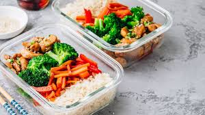

Why?
Hello! My name is Jackson and I struggle with finding good meals and the time to cook them. I have a few that I enjoy and assumed other college students might find them useful. So here I have put together some of my favorite meals that I make. They're all great to pack up for lunch!
Who am I?
I am a sophomore at the University of South Carolina, studying IT. I work a part-time job as a marketing assistant so I usually pack a lunch, this is where I got the idea for the website. Enjoy!

Jackson Williams